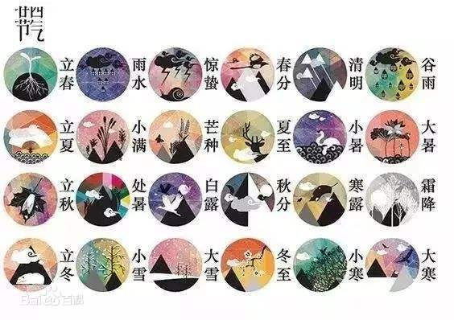

二十四节气，是干支历中表示自然节律变化以及确立“十二月建”的特定节令。它最初是依据斗转星移制定，北斗七星循环旋转，斗柄绕东、南、西、北旋转一圈，为一周期，谓之一“岁”（摄提），每一旋转周期始于立春、终于大寒。现行的“二十四节气”是依据太阳在回归黄道上的位置制定，即把太阳周年运动轨迹划分为24等份，每15°为1等份，每1等份为一个节气，始于立春，终于大寒。“二十四节气”是中华民族悠久历史文化的重要组成部分，凝聚着中华文明的历史文化精华
“二十四节气”是上古农耕文明的产物，农耕生产与大自然的节律息息相关，它是上古先民顺应农时，通过观察天体运行，认知一岁（年）中时候（时令）、气候、物候等变化规律所形成的知识体系；每个节气都表示着时候、气候、物候，这“三候”的不同变化。二十四节气，表达了人与自然宇宙之间独特的时间观念，蕴含着中华民族悠久的文化内涵和历史积淀。它不仅在农业生产方面起着指导作用，同时还影响着古人的衣食住行，甚至是文化观念
经历史发展，农历吸收了干支历的节气成分作为历法补充，并通过“置闰法”调整使其符合回归年，形成阴阳合历，“二十四节气”也就成为了农历的一个重要部分。在国际气象界，二十四节气被誉为“中国的第五大发明”。2016年11月30日，二十四节气被正式列入联合国教科文组织 人类非物质文化遗产代表作名录。
立春：斗柄指向法：斗指寅；定气法：太阳黄经度数为315度。公历2月3－5日交节。立春是干支历寅月的起始。
雨水：斗指壬；大阳黄经度数为330°。公历2月18－20日交节。
惊蛰：斗指丁；太阳黄经为345°。公历3月05－07日交节。惊蛰是干支历卯月的起始。
春分：斗指壬；太阳黄经为0°。公历3月20－22日交节。
清明：斗柄指向法：斗指乙；时间平均法：冬至后105天；定气法：太阳黄经为15°。公历4月04－06日交节。清明是干支历辰月的起始。
谷雨：斗指辰；太阳黄经为30°。公历4月19－21日交节。
夏季立夏：斗指东南；大阳黄经度数为45°。公历5月05－07日交节。立夏是干支历巳月的起始。
小满：斗指甲；太阳黄经为60°。公历5月20－22日交节。
芒种：斗指己；太阳黄经为75°。公历6月05－07日交节。芒种是干支历午月的起始。
夏至：斗指午；太阳黄经为90°。公历6月21－22日交节。
小暑：斗指辛；太阳黄经为105°。公历7月06－08日交节。小暑是干支历未月的起始。
大暑：斗指丙；太阳黄经为120°。公历7月22－24日交节。
秋季立秋：斗指西南；太阳黄经为135°。公历8月07－09日交节。立秋是干支历申月的起始。
处暑：斗指戊；太阳黄经为150°。公历8月22－24日交节。
白露：斗指癸；太阳黄经为165°。公历9月07－09日交节。白露是干支历酉月的起始。
秋分：斗指已；太阳黄经为180°。公历9月22－24日交节。
寒露：斗指甲；太阳黄经为195°。公历10月08－09日交节。寒露是干支历戌月的起始。
霜降：斗指戌；太阳黄经为210°。公历10月23－24日交节。
冬季立冬：斗指西北；太阳黄经为225°。公历11月7－8日交节。立冬是干支历亥月的起始。
小雪：斗指己；太阳黄经为240°。公历11月22－23日交节。
大雪：斗指癸；太阳黄经为255°。公历12月6－8日交节。大雪是干支历子月的起始。
冬至：斗指子；太阳黄经为270°。公历12月21－23日交节。
小寒：斗指子；太阳黄经为285°。公历1月5－7日交节。小寒是干支历丑月的起始。
大寒：斗指丑；太阳黄经为300°。公历1月20－21日交节。